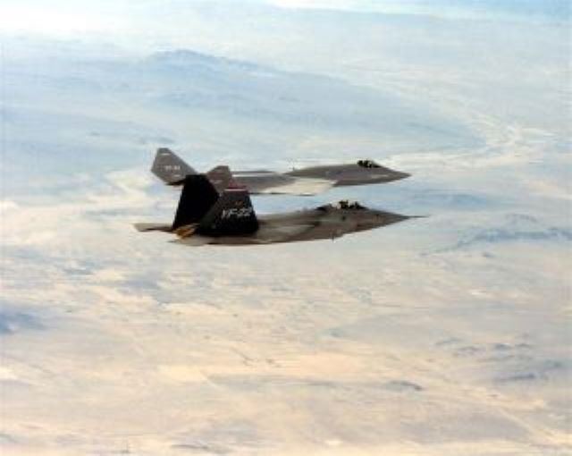

Development
Explaining the history before and during its conception. Companies behind the development are McDonnell Douglas and Northrop Grumman.

| yf-118g | Despite its futuristic look that seem striaght out of a science fiction movie, this aircraft utilized many "off the shelf" aircraft components, and relied on existing technology to reduce costs while also speeding production. That included the use of a control system that was all-manual with no computer assists, while the aircraft's landing gear was actually adapted from Beech King Air and Queen Air aircraft. Boeing has used techniques in the development of X-32 Joint Strick Fighter demonstrators and later in its X-45A Unmanned Combat Air Vehicle prototype. |
| yf-23 | In 1981, USAF requested for an Advanced Tactical Fighter (ATF) to replace the F-15 Eagle. Prioritizing air dominance and to take advantage of emerging technologies. That being composite materials, lightweight alloys, advanced flight control systems, more powerful engines, and stealth technologies. During this time, the U.S. navy annoounced that it would use a variant of the ATF winner to replace their aging F-14 Tomcat. |